Ubuntu 14.04 "Trusty Tahr" is the latest Long Term Support (LTS) release of the popular Linux operating system. I use Ubuntu's minimal install image to create a console-only base configuration that can be customized for various tasks and alternate desktops.
Let's go!
Below is a visual walk-through of a sample Ubuntu setup that makes use of an entire storage device divided into 3 partitions: a separate root partition, and LUKS encrypted swap + home.
0. Prepare install media
Download the 64-bit trusty minimal installer (32-bit for older machines) and burn to CD or flash the image to a USB stick. [1] Using the minimal console installer vs. the graphical installer provides more options during setup. [2]
Minimal installer (requires network connection) downloads all the latest packages during setup.
1. Launch

 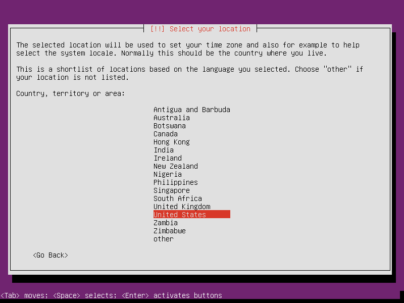
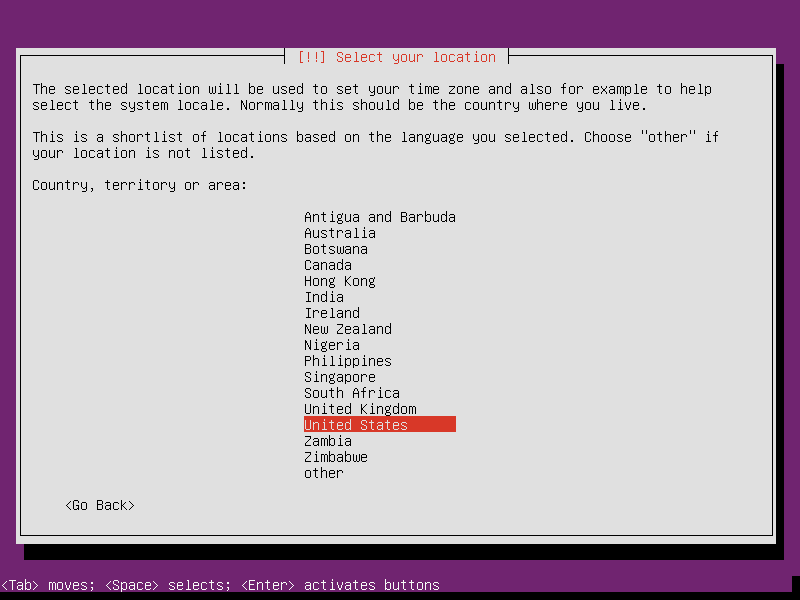
 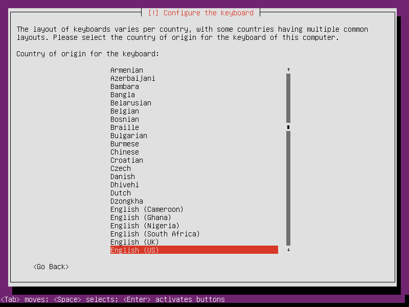
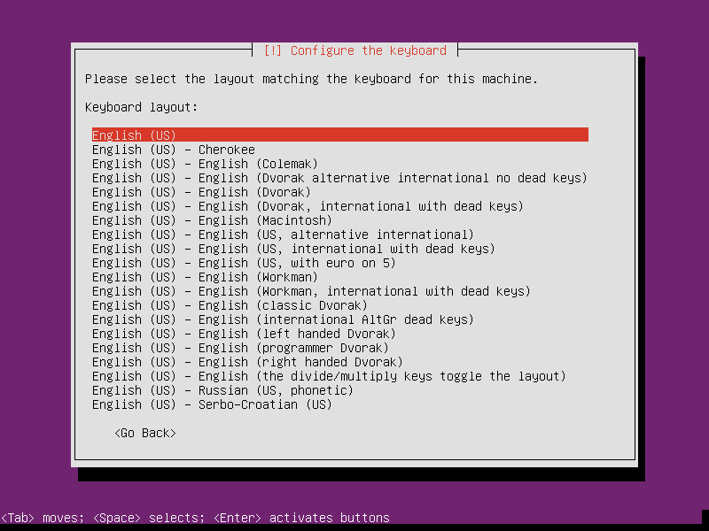
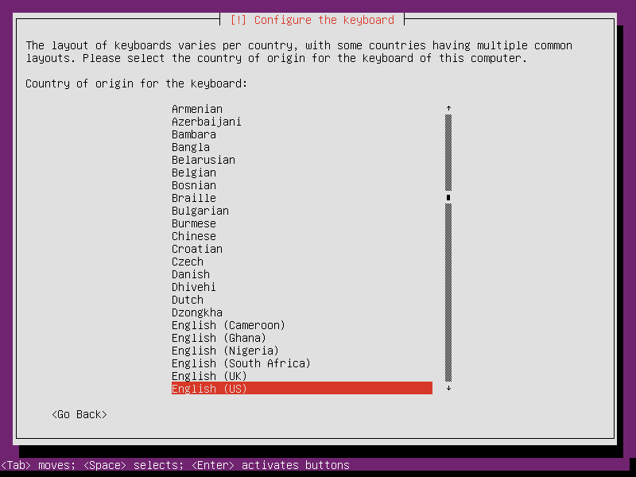
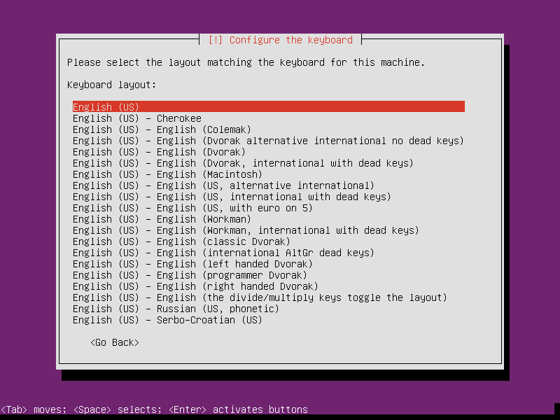


Contents of the installer are now loaded into memory and the USB stick can safely be removed. [3]
 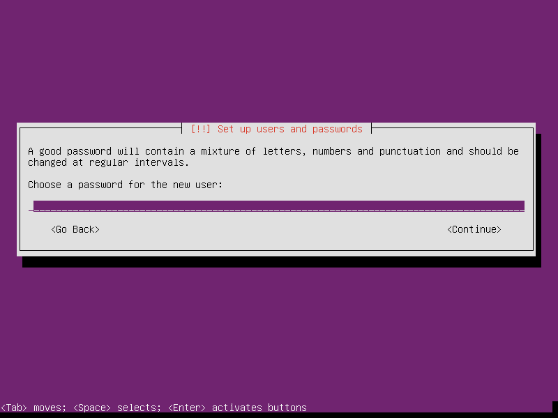
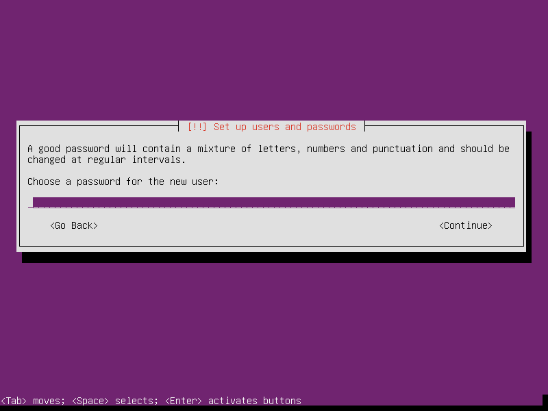


2. Partitions
In the example below I create 3 partitions [4] on the disk:
- sda1 is a 20GB root partition
- sda2 is a 1GB LUKS encrypted swap partition using a random key
- sda3 uses the remaining space as a LUKS encrypted home partition using a passphrase


Setting Mount options: noatime decreases write operations and boosts drive speed ...

 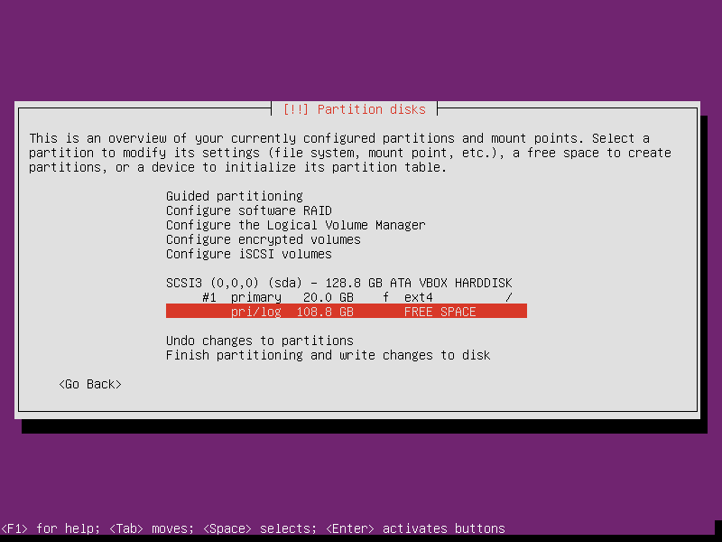
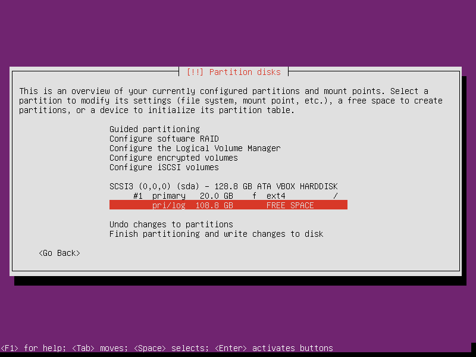


If the hard disk has not been securely wiped prior to installing Ubuntu (using a utility like DBAN) you may want to configure Erase data: yes. Note, however, that depending on the size of the disk this operation can last several hours ...


 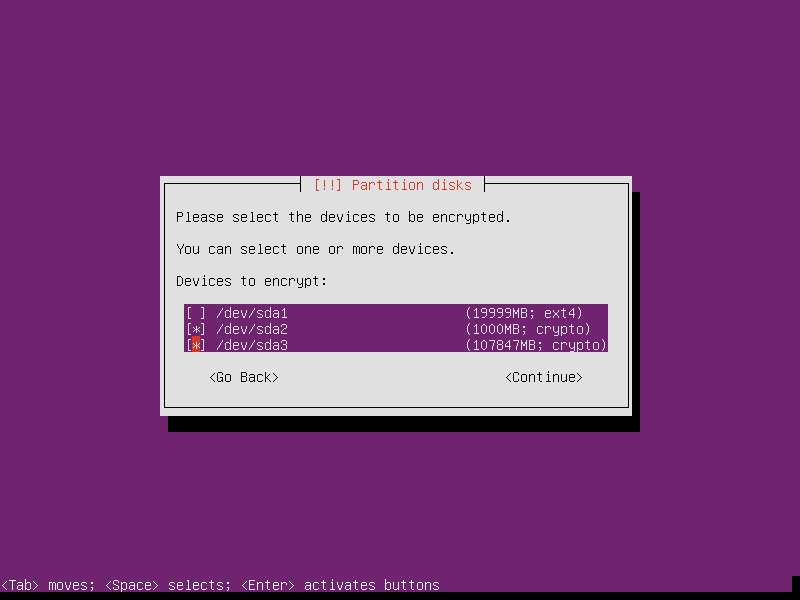
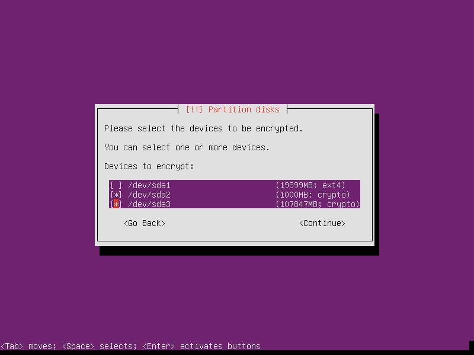


Reserved blocks can be used by privileged system processes to write to disk - useful if a full filesystem blocks users from writing - and reduce disk fragmentation. On large, non-root partitions extra space can be gained by reducing the 5% default reserve set by Ubuntu to 1% ...


3. Install packages and finish up

Leave all tasks unmarked if you wish to start with a minimal, console-only base configuration ready for further customization ... [5]

Standard system utilties are downloaded and the installer makes its finishing touches ...
 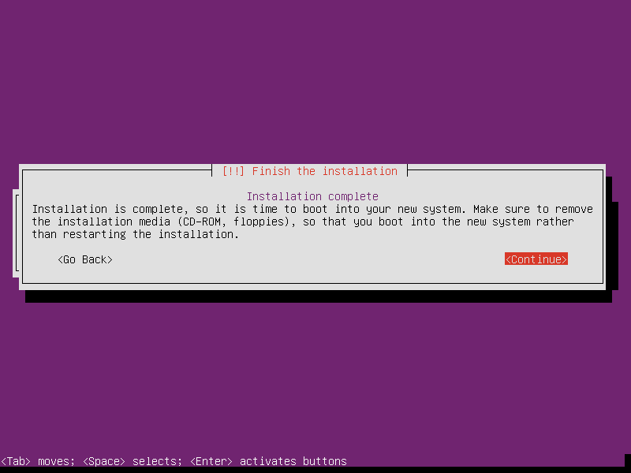
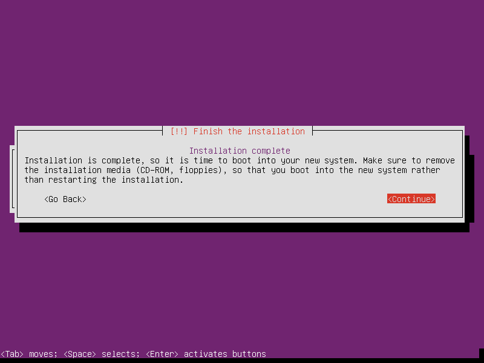
4. First boot
System will display a passphrase prompt to unlock encrypted home partition ...
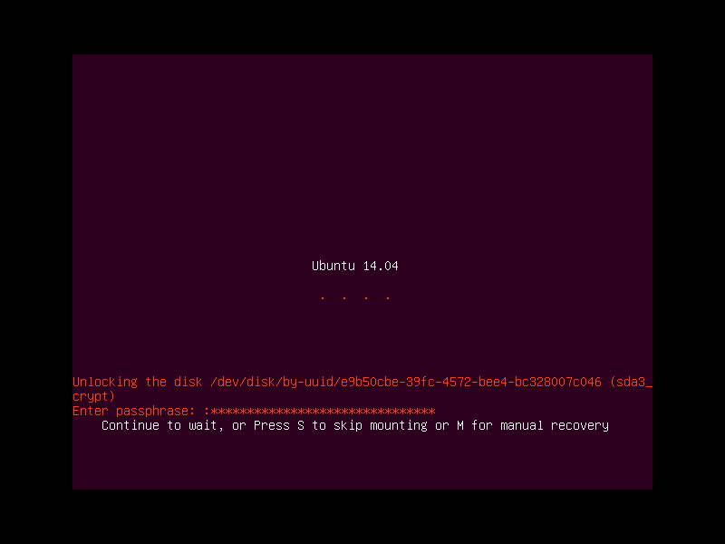Login ... then run timedatectl to confirm system time+date is properly set.
5. GRUB
After running a minimal install on my C720 Ubuntubook (with LUKS- encrypted home) I ran into this issue: "Black screen instead of password prompt for boot encryption".
I had to enter my LUKS passphrase blind and ALT+F1 to tty. When I tried removing the GRUB options splash and/or quiet I lost the ability to enter the passphrase at all and a hard reset was required.
Fix: Modify /etc/default/grub ...
# Force the kernel to boot in normal text mode with '=text'
GRUB_GFXPAYLOAD_LINUX=text
... and update ...
$ sudo update-grub
Now it works! Chromebook currently is the only device I have run into this issue.
See: GNU gfxpayload
6. Network
Check which network interfaces are detected and settings ...
$ ip a
Wired interfaces are usually auto-configured by default and assigned an IP address courtesy of DHCP.
To assign a static address, deactivate the wired interface and create a new entry in /etc/network/interfaces. Sample entry for enp3s0 ...
# The primary network interface
auto enp3s0
#iface enp3s0 inet dhcp
iface enp3s0 inet static
address 192.168.1.88
netmask 255.255.255.0
gateway 192.168.1.1
dns-nameservers 192.168.1.1
Bring up|down interface with sudo if{up,down} enp3s0.
Create a temporary wireless interface connection to WPA2 encrypted access points manually using wpa_supplicant + wpa_passphrase + dhclinet. Sample setup of wlp1s0 ...
$ sudo ip link set wlp1s0 up # bring up interface
$ iw dev wlp1s0 link # get link status
$ sudo iw dev wlp1s0 scan | grep SSID # scan for access points
$ sudo -i # simulate a root login shell (for wpa_supplicant)
# wpa_supplicant -B -i wlp1s0 -c<(wpa_passphrase "MY_SSID" "MY_PASSPHRASE") # connect to WPA/WPA2 ... '-B' sends the process to the background
# exit
$ sudo dhclient wlp1s0 # obtain IP address
More permanent configurations may be set in /etc/default/interfaces. Sample setup [6] with a static IP address ...
iface wlp1s0 inet static
address 192.168.1.77
netmask 255.255.255.0
gateway 192.168.1.1
wpa-ssid MY_SSID
wpa-psk MY_PASSPHRASE
dns-nameservers 8.8.8.8 8.8.4.4
Alternative setup using DHCP ...
allow-hotplug wlp1s0
iface wlp1s0 inet dhcp
wpa-ssid MY_SSID
wpa-psk MY_PASSPHRASE
dns-nameservers 8.8.8.8 8.8.4.4
Once a link is established an optional network manager utility may be installed. Packages network-manager and network-manager-gnome provide the console nmcli and graphical nm-applet clients respectively ...
$ sudo apt install network-manager
Comment out (deactivate) any entries in /etc/network/interfaces that will be managed by network-manager.
7. Where to go next ...
... is up to YOU. Yeehaw.
Happy hacking!
Notes
| [1] | An alternative is adding the image to a USB stick with multiple Linux installers. |
| [2] | Specifically, the console installer provides a random key option for the encrypted swap partition. |
| [3] | Recommended: Otherwise the partitioning tool may designate the USB device as primary (sda) storage and lead to broken partition layouts. |
| [4] | For storage devices >=128GB I create separate root + swap + home partitions. Smaller devices get boot + swap + root partitions and note encrypted root requires an unencrypted boot. |
| [5] | The task selection menu can be run post-install using sudo tasksel. |
| [6] | Multiple wireless static IP address setups can be created with iface wlp1s0_NAME inet static and [de]activated with sudo if{up.down} wlp1s0=wlp1s0_NAME. |